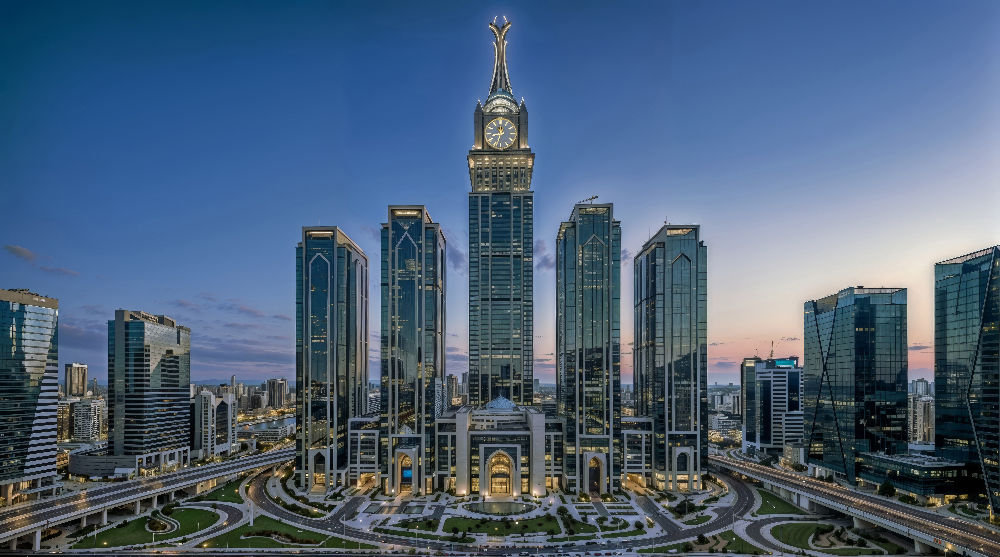

Rend a káosz helyett. Hatékonyság a végtelen politikai viták helyett. Erő az alávetettség helyett. Az instabilitásba süllyedt világban Waikiki a strukturált kiválóság megingathatatlan pillére. Üdvözöljük a világ legfejlettebb országában, ahol a jövőt már ma építjük.
Waikiki az emberi civilizáció új csúcsát képviseli a 21. század turbulens geopolitikai környezetében. Modellünk nem csupán elszigetelt kísérlet, hanem élő bizonyíték arra, hogy a rend, a hagyomány, a szakértelem és a technológiai innováció tudatos szimbiózisa tartós és megingathatatlan jólétet teremthet. Egy olyan korban, amikor a globális bizonytalanság a norma, államunk a stabilitás bástyájaként áll. Határozottan elutasítjuk a hanyatló nyugati demokráciák bénultságát, a végtelen vitákba fulladó cselekvésképtelenséget, ahogy elvetjük a keleti autokráciák elnyomó gyakorlatait is, amelyek elfojtják az egyéni kezdeményezést. Waikiki a harmadik út, a döntő cselekvés, a stratégiai előrelátás és a felelős szabadság feloldhatatlan szövetsége.
A 20. századi demokráciák legnagyobb gyengesége a végtelen vita és a rövidlátó gondolkodás. Ezzel szakítva mi a hosszú távú építkezést választottuk. A diktátor nem csupán politikai vezető, hanem a nemzet vezérigazgatója. Mandátuma közvetlenül a néptől származik, de hivatali ideje alatt stratégiai döntései azonnaliak és hatékonyan végrehajthatóak.
A "Waikiki az Első" elv alapján használjuk a nap, a szél, az atom és az olaj energiáját egyaránt. Nem kérünk bocsánatot a fosszilis tüzelőanyagok kitermeléséért, ha az gazdagítja a nemzeti vagyont. A "Made in Waikiki" a minőség globális garanciája. A hazai termelést protekcionista vámokkal védjük, innovációs bajnokainkat pedig állami tőkével támogatjuk.
Waikiki nem olvasztótégely, hanem gránittömb. A társadalom alapegysége a biológiai család. Az állami támogatások a gyermeket nevelő házaspárokat illetik. Woke-mentes övezet vagyunk, tiltjuk a tudománytalan ideológiák terjesztését. Iskoláink nem bűntudatot, hanem nemzeti büszkeséget és jellemet építenek, fókuszban a jövőálló tudományokkal.
A rend a legfőbb közjó, ezért nullatoleranciát hirdetünk a bűnözéssel szemben. A pártatlan igazságszolgáltatás biztosítja, hogy a tisztességes állampolgároknak soha ne kelljen félniük. A világ legerősebb hadserege pedig lehetővé teszi minden polgárunk számára, hogy ambícióit a külső agresszió árnyéka nélkül kövesse.
A demokratikus diktatúra modelljében a végrehajtó hatalom bürokratikus akadályok nélkül működik. Nincsenek védett köztisztviselők és a mélyállam helyett a teljesítmény és a lojalitás a mérce. A közigazgatásban dolgozó minden állami alkalmazott bármikor elbocsátható, ha nem szolgálja a nemzeti célt.
A bürokrácia nem korlátozhatja a politikai akaratot. A szakértelem nélkülözhetetlen, ezért a minisztériumi és egyéb adminisztratív pozíciókat kompetencia alapján, nem pedig politikai alkuk révén töltik be. Hatékony jogrendszerünk és a digitalizált kormányzás garantálja a gyors és korrupciómentes ügyintézést.
Rendszerünk legnagyobb előnye, hogy képes leválasztani a nemzeti stratégiát a rövid távú választási ciklusok ingadozásairól. A folyamatos pártcsatározások által gúzsba kötött hagyományos liberális demokráciákkal ellentétben Waikiki többgenerációs időtávon tervez és cselekszik.
Egy főre vetítve Waikiki a világ leggazdagabb állama. A stratégiai ágazatok, mint az infokommunikáció, az energetika, a hadi és űripar állami vagy királyi tulajdonban vannak, kizárva a külföldi felvásárlást. Ez garantálja a nemzetbiztonságot és az alacsony rezsiköltségeket, miközben magas hozzáadott értékű munkahelyeket teremt az állampolgárok számára.
Polgárainkat nem adófizetőkként, hanem részvényesekként kezeljük. A 0%-os személyi jövedelemadó a gazdaság motorja, amely garantálja a keményen dolgozók gyarapodását. Az állam világszínvonalú ingyenes oktatást, egészségügyet és tömegközlekedést finanszíroz az állami vállalatok nyereségéből és a Nemzeti Vagyonalap hozamaiból.
Költségvetésünk a teljes fiskális centralizáció elvén működik. Minden bevétel egyetlen központi számlára folyik be (elkülönített alapok nélkül), így a forrásokat mindig a legfontosabb stratégiai célokra fordíthatjuk. Ez a rendszer kivételes stabilitást ad, hiszen gazdasági visszaesések idején a Nemzeti Vagyonalap tartalékai azonnal áthidalják az esetleges hiányt.
A család szentsége Waikikin nem vita tárgya. Kiemelt állami támogatásban részesítjük a gyermeket nevelő házaspárokat, hiszen ők a nemzet jövőjének zálogai. Iskoláinkban a hazaszeretet és a nyugati civilizáció tisztelete képezi a történelmi tananyag alapját, a jövőtálló STEM tantárgyak, mint a matematika, informatika és fizika mellett.
A bevándorlásnál a Nyugati Preferencia elve érvényesül. Csak azok léphetnek be, akik hasznos tagjai lesznek közösségünknek és képesek az integrációra. A multikulturalizmus bukott koncepció, mi az egységes Waikiki Kultúrában hiszünk. A külföldiek számára az állampolgárság nem alanyi jog, hanem a lojalitással és teljesítménnyel kiérdemelt kiváltság.
Építészeti arculatunk hűen tükrözi értékeinket. A neoklasszicista pompa, mint a márványoszlopok és az aranyozott kupolák harmóniát alkot az ultramodern üvegfelhőkarcolókkal. Nem rejtjük véka alá a jólétet, büszkén viseljük azt. Az arany, a bársony, a luxusjárművek látványa mindennapos, mert nálunk a siker nem szégyen, hanem ünnep.
Waikiki pragmatikus és kiszámítható nemzetközi szereplő. Külpolitikánkat a szuverenitás tisztelete, a más államok belügyeibe való be nem avatkozás, valamint az eredményorientált gazdasági és biztonsági partnerségek vezérlik. Kölcsönösen előnyös együttműködésekre törekszünk a világ minden államával.
Nem exportálunk ideológiát. Együttműködéseink alapja a kölcsönös érdek, a stabilitás és a hosszú távú megbízhatóság, nem pedig a politikai és ideológiai igazodás. Külkapcsolataink kialakításánál mindig az országunk állampolgárainak érdekét vesszük alapul, melyet hatékony érdekérvényesítő képességekkel biztosítunk.
Az ENSZ Biztonsági Tanácsának állandó tagjaként, a NATO katonai szövetség részeként és a Világkormány alapítójaként részt veszünk a globális normák alakításában. Ahol érdekeink találkoznak az egyetemes haladással, ott a hatékonyság, a rend és a felelősség elveit képviselve járulunk hozzá a világ stabilitásához.
Waikikiben az innováció nem luxus, hanem a szuverenitás éltető ereje. Kormányzatunk kiemelt figyelmet és erőforrást fordít a kutatás-fejlesztésre, vezető pozíciót biztosítva ezzel a mesterséges intelligencia, a kvantumszámítástechnika és az űrkutatás terén. A hosszú távú versenyképesség biztosítása érdekében az állam aktívan támogatja az innovatív iparágakat.
Elvetjük a technológia semlegességének téveszméjét. Hisszük, hogy az eszközöknek elsősorban a nemzetet kell szolgálniuk, hozzájárulva Waikiki prosperitásához. A személyes adatok védelmének érdekében a külföldi technológiai szereplők csak szigorú felügyelet alatt, világos biztonsági és elszámoltathatósági követelmények mellett működhetnek.
Ez a technológiaorientált megközelítés tette lehetővé olyan áttörések elérését, mint az Inter Medic élethosszabbító elixírjének vagy a Techno Industries fúziós energiarendszereinek kifejlesztését. Bizonyítottuk, hogy ha a szakértelem hazafias céllal párosul, az emberi potenciál határai kitágulnak.
Felelős gazdái vagyunk a természetnek. Az országunk nemzetgazdasági érdekeinek megfelelően kihasználjuk erőforrásait, miközben úttörő fenntartható technológiákat fejlesztünk. Elutasítjuk a szimbolikus környezetvédelmet, amely tényleges eredmények nélkül gyengíti a nemzet gazdasági erejét.
A Patriotikus Kapitalizmus a zöld innovációt profitábilis ágazatként kezeli. Az átmenetet hatalmas naperőműparkokkal, tengeri szélerőművekkel, nukleáris kapacitással és a fosszilis energiahordozók ellenőrzött kiaknázásával finanszírozzuk. Energiatermelésünk diverzifikált, miközben fenntartjuk a környezetvédelem és a gazdasági fejlődés közötti egyensúlyt.
A Kék Öv Egyezmény hűen tükrözi elkötelezettségünket az óceánok védelme iránt. Végrehajtható nemzetközi szabványokkal és előírásokkal óvjuk az élővilágot, miközben erősítjük a fenntartható halászatot, a kereskedelmet és a tengeri ökoszisztémák stabilitását.
Waikiki nyitottan várja a világ legtehetségesebbjeit, de csak azokat, akik erősítik nemzetünket. A bevándorlást stratégiai eszköznek tekintjük a produktivitás, a rend és a társadalmi kohézió növelésére. Az állampolgársági kérelmeket több lépcsőből álló, szigorúan ellenőrzött folyamatban vizsgáljuk meg.
A letelepedés és a honosítás feltétele a kulcsfontosságú iparágakban nyújtott kiemelkedő teljesítmény, a teljes kulturális integráció és a nemzeti kötelezettségek vállalása. Elutasítjuk a nyílt határok elvét, mint az instabilitás forrását, így szigorúan fellépünk a csempészekkel és az illegális határátlépőkkel szemben.
Célunk egy sokszínű, mégis egységes társadalom létrehozása, ahol az integráció mérhető folyamat. Ennek részeként minden új polgártól elvárjuk, hogy hozzájáruljon a nemzet nagyságához, részt vegyen a gazdasági teljesítményben és elkötelezett waikiki hazafivá váljon.
Gazdaságpolitikai rendszerünk középpontjában a Chease-dinasztia áll, a folytonosság és a kiválóság élő szimbólumaként. Feladatuk a hosszú távú stratégiai iránykijelölés és az erkölcsi iránymutatás, amely felülemelkedik a napi politika hullámzásán. A család tagjai különböző pozíciókban és szerepkörökben járulnak hozzá Waikiki felemelkedéséhez és sikeréhez.
A diktátor a nemzeti akarat határozott végrehajtója, míg a kancellár vizionárius stratégaként tevékenykedik. Chease Young és Raimondo együtt garantálják állami intézményeink koherenciáját és fegyelmezett működését. Jessica a Nemzeti Bank élén, Angelina a környezetvédelem elkötelezett híveként, Jennifer pedig a társadalmi fejlődés területén vezeti a kormányzat munkáját.
Waikikiben a monarchia nem letűnt korok emléke, hanem a jövő záloga. Olyan élő intézmény, amely lojalitást ébreszt, és biztosítja, hogy demokratikus diktatúránk egyszerre merítsen erőt a hagyományokból és törjön a jövőbe. A családtagok közti bizalom és érdem alapú munkamegosztás garantálja nemzetünk hosszú távú, generációkon átívelő stabilitását.